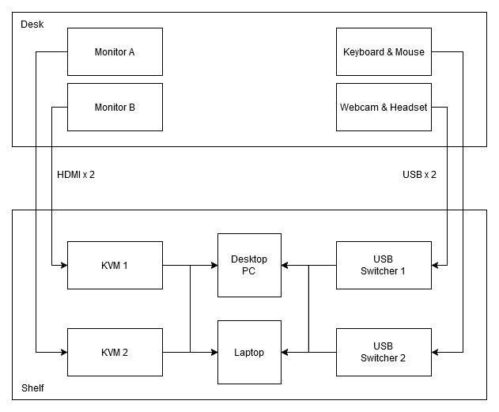
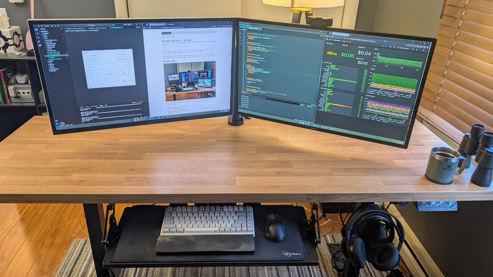

Workspace 2025 Part 1: The Desk
My workspace is a mess. There’s so much stuff on my standing desk that it’ll no longer stay at standing height - it just slowly … sinks … down.
To remedy this, I want to minimize the amount of stuff on my desk. There are a few fun problems to solve along the way, but first let me show you how it looks today.
My Desk Today⌗

I use my desk for both work and personal activities. It currently holds (from left to right, roughly):
- My work laptop (and dock) on an arm
- A KVM under the laptop
- My main 32" monitor on an arm
- Speakers under the main montior
- Keyboard and mouse
- 2x 21" aux monitors on arms
- My desktop PC
The Ideal Desk of Tomorrow⌗
Ideally, I’d like my desk to only hold two 32" monitors, keyboard & mouse, webcam, and headset. Both PCs should exist elsewhere with minimal connections to the desk (initially on a shelf, eventually in a rack).
I’d also like to improve the KVM situation. My current setup uses a single KVM that can switch the monitors back and forth between my work and personal PCs. Instead, I’d like to be able to swap the monitors between PCs independently:
| Monitor A | Monitor B |
|---|---|
| work | work |
| personal | personal |
| work | personal |
| personal | work |
To accomplish this, I’ll use two single-monitor KVMs. I’d also like to be able to swap my USB devices independently of the monitors, so I’ll have a separate USB switch for that purpose. And just to make it a tiny bit more complicated, I want to be able to switch my mouse and keyboard independently from my headset and webcam, so I’ll actually have two USB switches.
Q: Why don’t use just RDP into your work laptop from your personal PC?
A: RDP is disabled on my work laptop :(
To recap, here’s what the new landscape is:

And here’s what it looks like:

Now you might notice that the KVMs and USB switchers aren’t sitting on the desk, so how am I going to swap between them?
That is the topic of Part 2: The Switch.